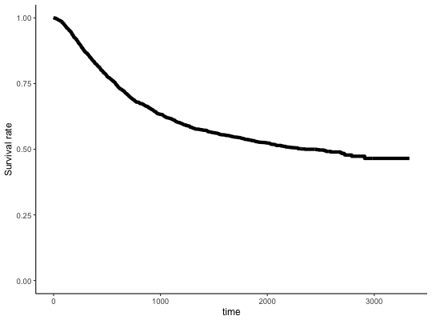
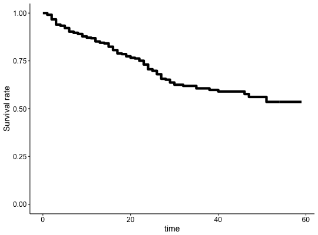
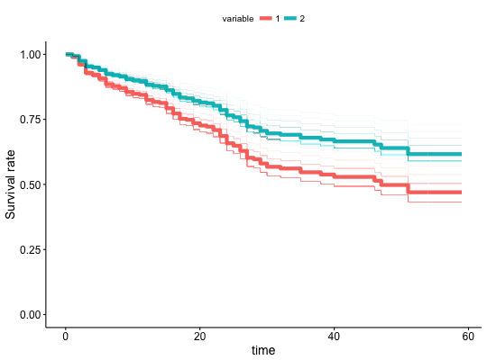

Adjusted Survival Curves for Cox Proportional Hazards Model
This function plots adjusted survival curves for coxph model.
The idea behind this function is described in https://cran.r-project.org/web/packages/survival/vignettes/adjcurve.pdf.
For every observation in the dataset a prediction for survival curve is made.
Then the predictions are averaged with respect to a selected variable.
ggcoxadjustedcurves(fit, variable = NULL, individual.curves = FALSE, data = NULL, fun = NULL, palette = "hue", curve.size = 2, curve.alpha = 0.2, ylab = "Survival rate", ggtheme = theme_survminer(), ...)
Arguments
- fit
- an object of class coxph.object - created with coxph function.
- variable
- a variable (vector) with values corresponding to groups to be plotted
- individual.curves
- if TRUE then all individual predicted survival curves will be plotted
- data
- a dataset for predictions. If not supplied then data will be extracted from `fit` object.
- fun
- an arbitrary function defining a transformation of the survival curve. Often used transformations can be specified with a character argument: "event" plots cumulative events (f(y) = 1-y), "cumhaz" plots the cumulative hazard function (f(y) = -log(y)), and "pct" for survival probability in percentage.
- palette
- the color palette to be used. Allowed values include "hue" for the default hue color scale; "grey" for grey color palettes; brewer palettes e.g. "RdBu", "Blues", ...; or custom color palette e.g. c("blue", "red"). See details section for more information. Can be also a numeric vector of length(groups); in this case a basic color palette is created using the function palette.
- curve.size, curve.alpha
- size and alpha for individual survival curves
- ylab
- y axis label.
- ggtheme
- function, ggplot2 theme name.
Allowed values include ggplot2 official themes: see
theme. - ...
- further arguments passed to the function
ggparfor customizing the plot.
Value
Returns an object of class gg.
Examples
library(survival) fit2 <- coxph( Surv(stop, event) ~ rx + size, data = bladder ) ggcoxadjustedcurves(fit2, data = bladder)ggcoxadjustedcurves(fit2, individual.curves = TRUE, data = bladder, curve.alpha=0.01)ggcoxadjustedcurves(fit2, data = bladder, variable= bladder[,"rx"])ggcoxadjustedcurves(fit2, data = bladder, variable= bladder[,"rx"], individual.curves=TRUE, curve.alpha=0.01)